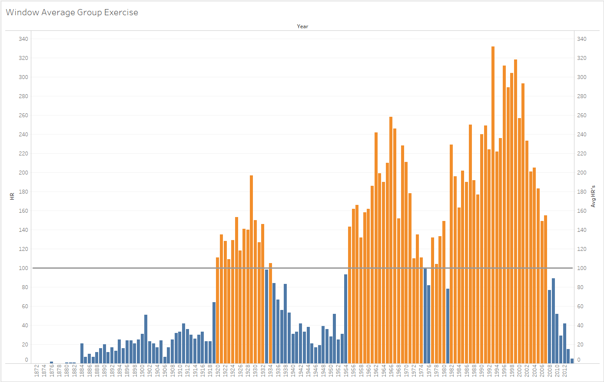

Percent of Total
Challenge 1: Who had a higher percentage of tweets sent from an iPhone? The United States, or United
Challenge 2: They say "April showers bring May flowers". Is it true?
Percent Difference
Challenge 1: Biggest jump in Dow
Challenge 2: S&P Outperforms Dow
Moving Average
Challenge 1: Twitter Trends
Challenge 2: Parameters to adjust range
Rank
Challenge 1: What are the hottest days in each month?
Challenge 2: Can you filter the view from Challenge 1 to only show the Top 5 hottest days each month
Window Calculations (e.g. Window_Max())
Challenge 1: How many more hits did Pete Rose have than the average player?
Challenge 2: Highlight the year(s) that had the greatest deviation in hits from the average.
Group Exercise: How do Home Runs in recent years compare to our Home Run Average over all years?
Let's see how Home Runs in recent years compare to previous years, by comparing the value of each year to the average across all years. Create a view that shows all our years on the x-axis, and the number of Home Runs per year on the y-axis. Let's highlight years that are above the average.
